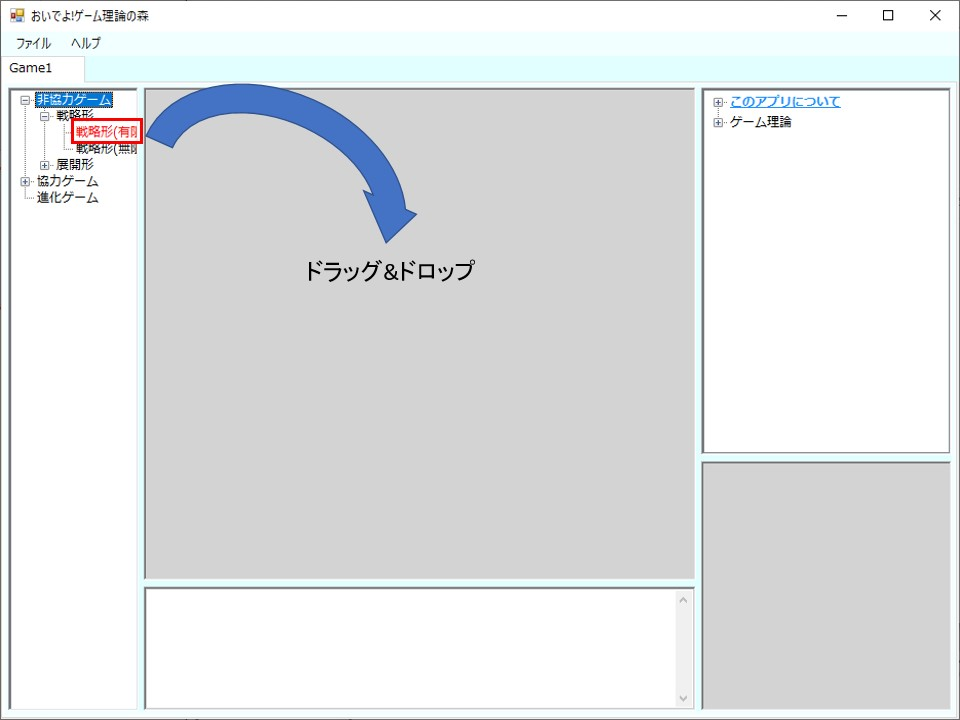
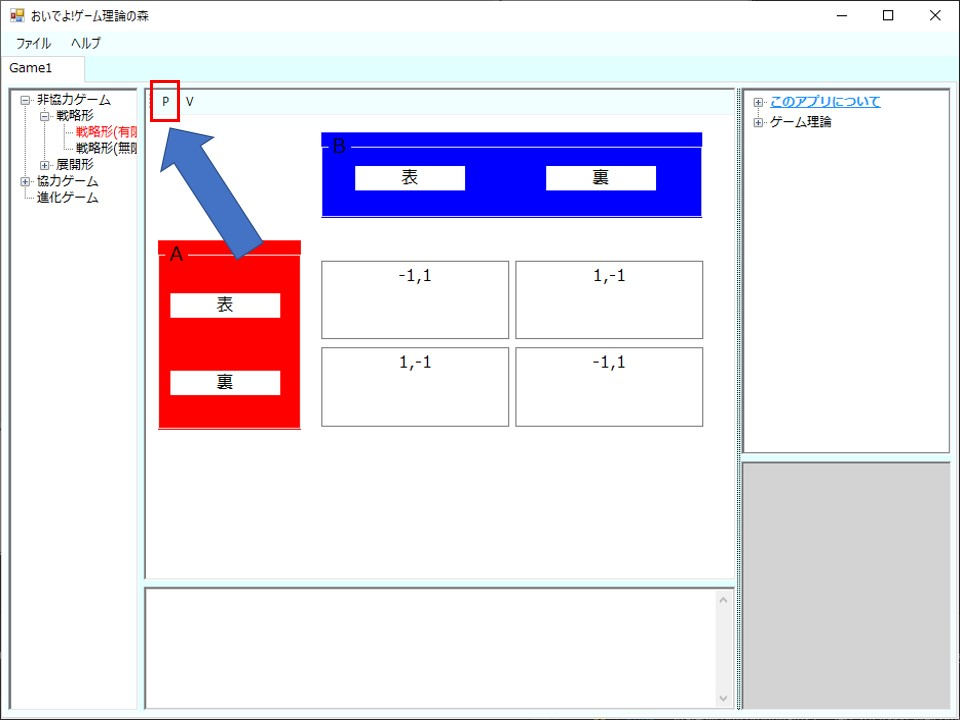
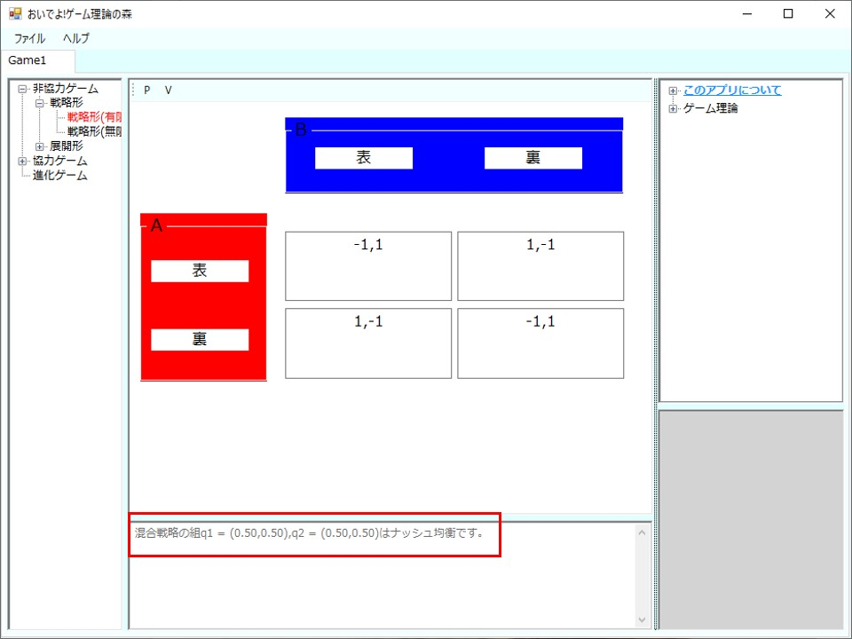

このアプリはゲーム理論を使って簡単に分析できるアプリです。例えば、ゲーム理論で囚人のジレンマを分析したいときには、 利得を入力して、ボタンを押せばナッシュ均衡を求めることができ、最適応答のグラフが導出されます。それでは、ゲームの作成からナッシュ均衡の導出まで見ていきましょう。
今回は戦略形ゲームを選択して、ゲームを作成したいと思います。
まずはじめに、起動画面から上記のようにツリーを展開した状態にしていただきます。 そして、戦略形(有限)をドラッグして、真ん中のグレーのパネルにドロップすることで、戦略形ゲームを分析する画面が出てきます。
ドラッグ＆ドロップすると、戦略形ゲームの表が出てきます。
ここに利得を入力してpのボタンを押すことで、ボタンを押すことでナッシュ均衡を求めることができます。 また、2プレイヤーの2×2の戦略形ゲームならば、最適応答のグラフを見ることができます。
